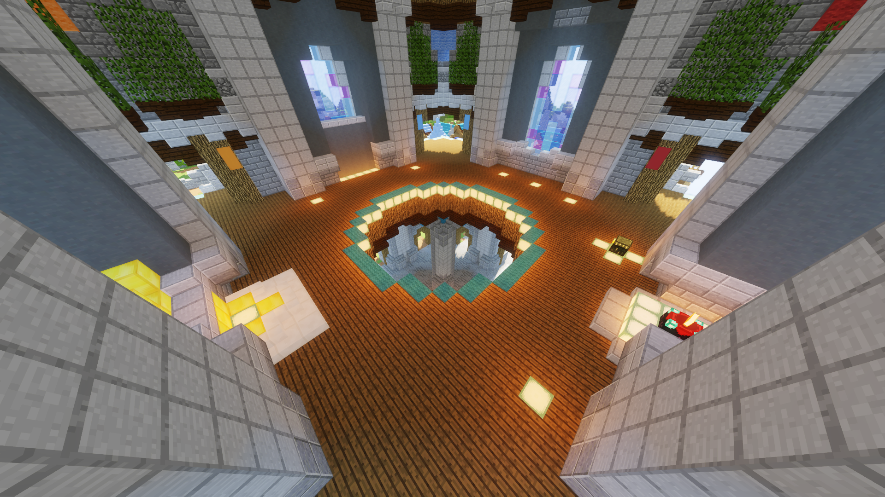
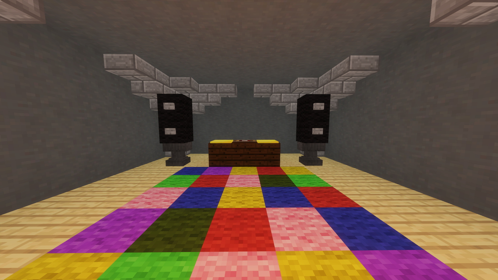
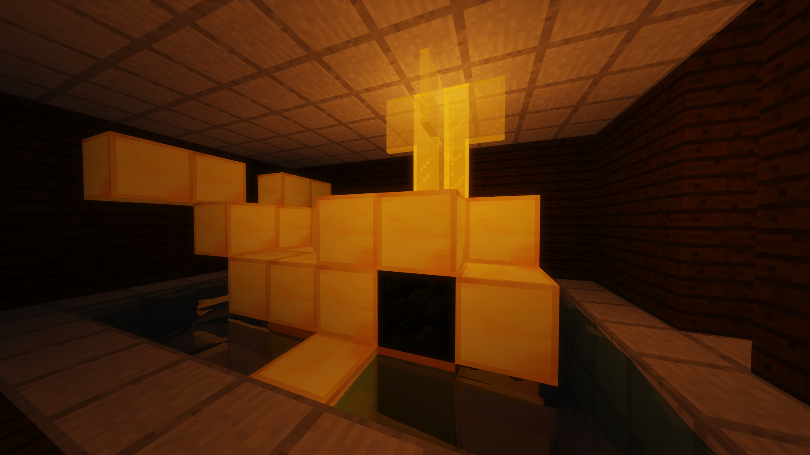

|
|  |
| Top to bottom: The castle; the spawn of the Castle map. |
From the Hypixel Pit Wiki
The Castle (or King's) map is a map in the Hypixel Pit. It was the fourth map to be released, published on May 22nd, 2019 in The Pit 0.4.1. The Castle map appears after the Elements map and before the Corals map in the map rotation.
The Castle map has several unique features, including the sewers and the King's Quest.
The map has four quadrants; images of these are shown below.
City

The City area of the map houses the sewers, where multiple unique items can be obtained.
| Name | Description | How to obtain |
| Sewer Rubbish | Can trade 64 with the Sewerfish to receive Fresh Sewer Pants. | Sewer Treasure |
| Sewer Block | Dark prismarine bricks. Can be placed even in the Sewers. | Sewer Treasure |
| Annoying Sewer Block | Soul sand. Can be placed even in the Sewers. | Sewer Treasure |
| Radioactive Boots | Leather boots. No special effects. Unlike most leather items, Radioactive Boots are lost on death. | Sewer Treasure |
| Milk Bucket | Can be used to create Mini Cakes or consumed to grant Regeneration I (2:00). | Sewer Treasure |
| Sewer Pants | Can be enchanted in the Mystic Well. Main article: Sewer Pants | Sewer Treasure |
Port

The Port area of the map has no special features, except for a coal block which mysteriously can be right-clicked to ignite it, or left-clicked to put it out. Some melons can be found on a ship.
| Name | Description | How to obtain |
| Sugar Extract | Can be used to create Mini Cake. | Breaking melons using an axe. |
Forest

The Forest area of the map features several ziplines, which can be stood next to in order to ride to the zipline's destination. There is also a fenced-off area containing several targets and a red clay line. Standing on the red line and shooting the target will release chickens.
| Name | Description | How to obtain |
| High-Grade Egg | Can be used to create Mini Cake or thrown. | Feeding Yummy Bread to target chickens |
| Raw Chicken | Can be cooked in a Farm furnace to make Marvelous Chicken. Cannot be eaten raw. | Rare drop from killing target chickens |
Farms

The Farms area contains large wheat fields. Players can harvest wheat from them, and can use nearby furnaces and crafting tables to process them. The furnaces can also be used to create Marvelous Chicken, another helpful item.
| Name | Description | How to obtain |
| Wheat | Can be used to create Packaged Bales and Yummy Bread. | Harvesting fully-grown wheat in the farms |
| Packaged Bale | Can be used to create Mini Cake, or placed. | Right-clicking on a Crafting Table while having more than 64 wheat. All full stacks of wheat in the player's inventory will be converted to bales. Kept on death. |
| Sugar Extract | Can be used to create Mini Cake. | Breaking melons using an axe. |
| Yummy Bread | Can be fed to target chickens to obtain High-Grade Egg, or eaten to grant 1♥︎ Instant Health, Regeneration III (0:03.6), and 2♥︎ absorption. | Right-clicking a furnace with 64 wheat and waiting 10 seconds. |
| Marvelous Chicken | Can be consumed, granting Speed I (0:50) and a 10% damage reduction for 50 seconds. 2 minute cooldown on gaining effects. | Right-clicking a furnace with Raw Chicken and waiting 12 seconds. |
Additionally, an item called the Cherry can be obtained rarely from kills anywhere.
| Name | Description | How to obtain |
| Cherry | Can be used to create Mini Cake. Cannot be eaten. Kept on death. | Very rare drop from killing players anywhere on the Castle map |
The Castle map contains many secret areas.
|  |
| The disco floor. |
In the water below the largest ship in the Port quadrant, there is a gap in the water located at (−19, 62, 103). Opening the trapdoor and descending the ladder beneath reveals a room with a rainbow-colored floor and two large speakers. A stand is in the back of the room with a record player.
|  |
| The golden whale. |
Behind a stack of hay bales in the Farms quadrant at (38, 76, −64), a descending ladder leads to a small room with a table and a chair (consisting of a door and trapdoors). Opening the door reveals another hidden ladder. Descending it leads to a whale made of gold blocks. The whale is partially submerged in water, making the room a viable fishing spot.